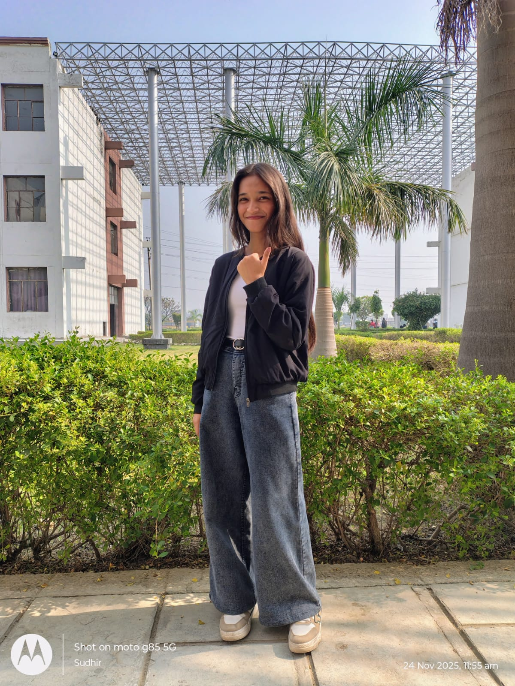

I'm a passionate full-stack web developer currently pursuing BCA (Bachelor of Computer Applications). I love creating beautiful, functional, and user-friendly web applications. With expertise in both frontend and backend technologies, I transform ideas into interactive digital experiences.
My journey in web development started with curiosity, and now I'm committed to continuous learning and delivering high-quality solutions. I enjoy solving complex problems and collaborating with teams to create impactful projects.
I believe in creating solutions that are not just functional but also intuitive and beautiful. Every project is an opportunity to learn something new and push my creative boundaries.
My goal is to build web applications that solve real-world problems and provide exceptional user experiences. I aspire to work on innovative projects that make a positive impact.
I love the challenge of turning complex problems into simple, beautiful solutions. I'm passionate about clean code, responsive design, and continuous improvement.